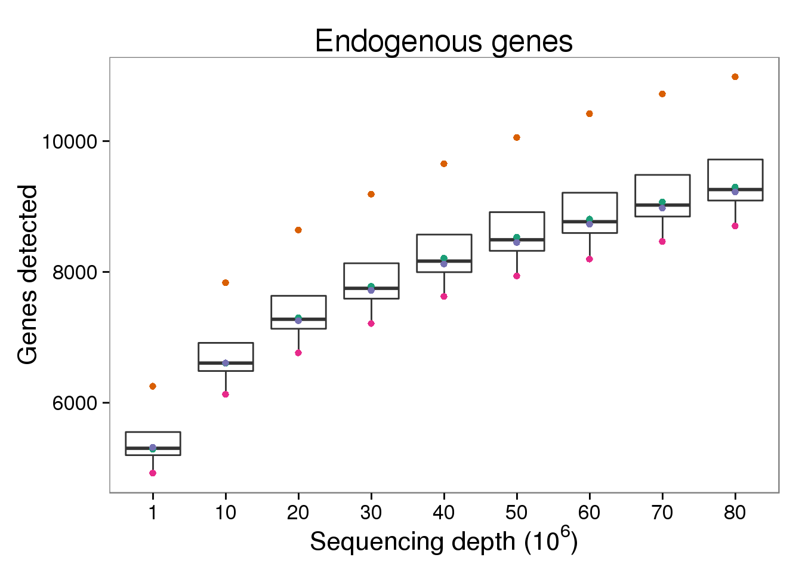
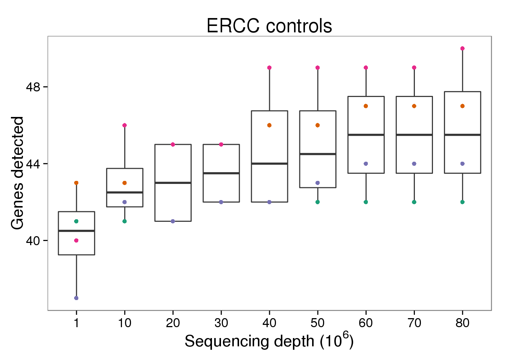
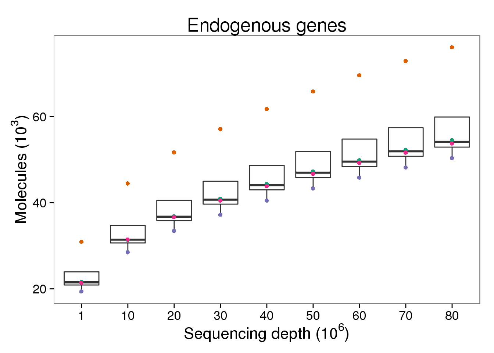
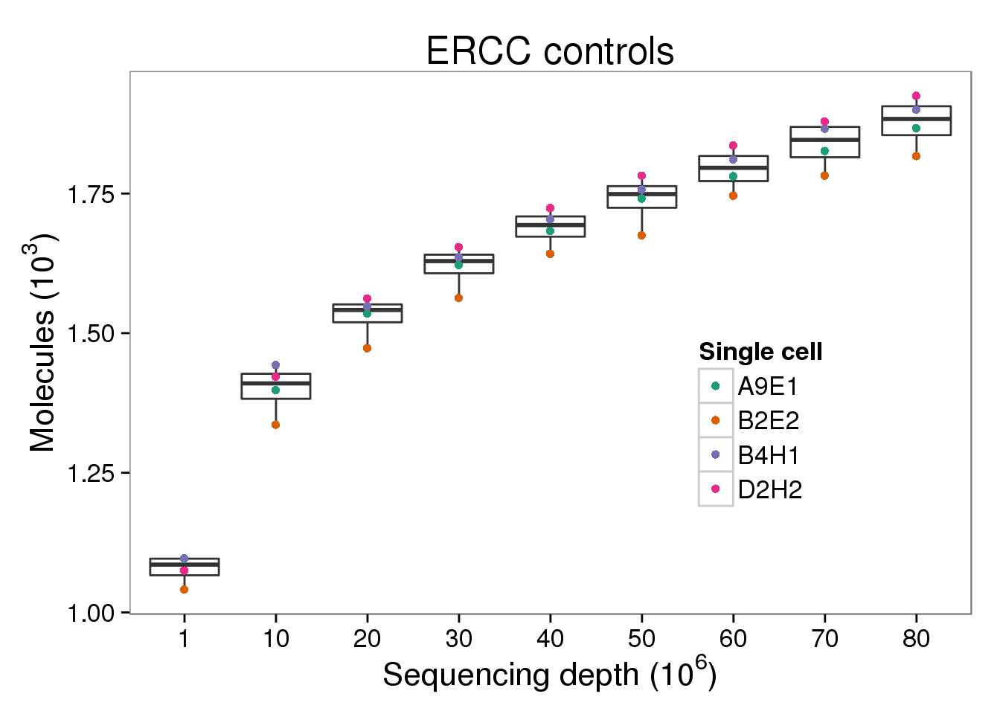
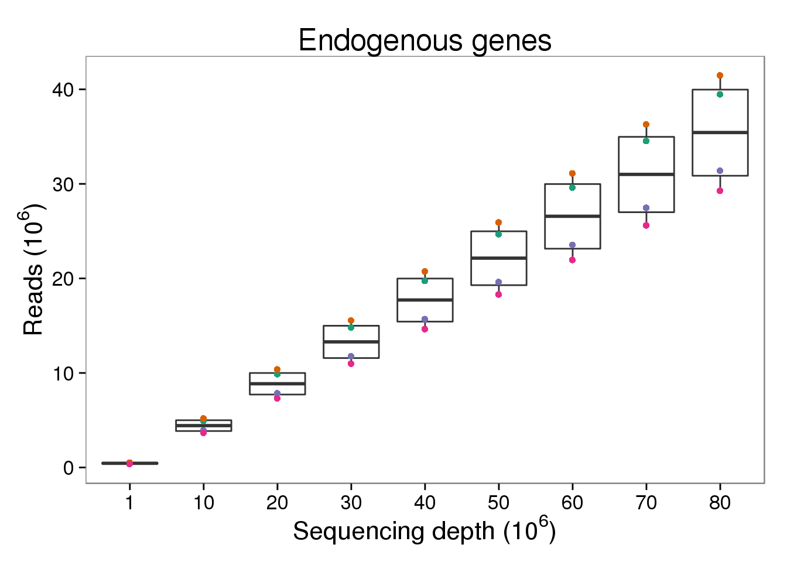
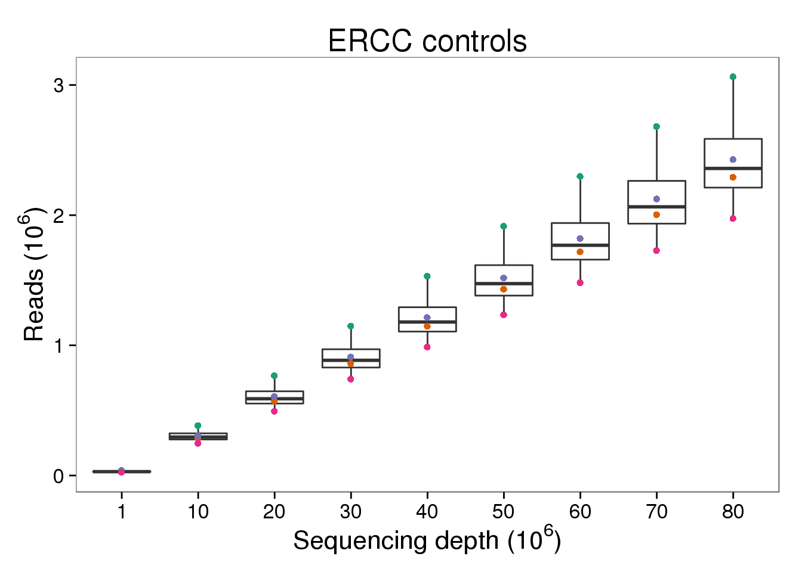

Last updated: 2016-06-29
Code version: c59e3a495e7257caa3180d1dfdaf315cdd79d715
The LCL subsampled files were created using the pipeline described here, which is similar to the pipeline used to process the full data files. The only difference is that the samples were processed in chunks of 4 million reads (the default output from CASAVA) and then merged pre-removal of duplicate UMIs.
library("dplyr")
library("tidyr")
library("ggplot2")
library("cowplot")
theme_set(theme_bw(base_size = 16))
theme_update(panel.grid.minor.x = element_blank(),
panel.grid.minor.y = element_blank(),
panel.grid.major.x = element_blank(),
panel.grid.major.y = element_blank())The subsampling statistics were generated with subsample-pipeline.py and detect-genes.R.
d <- read.table("../data/subsampling-results-lcl.txt",
header = TRUE, sep = "\t", stringsAsFactors = FALSE)
d$depth_mil <- d$depth / 10^6
d$counts_thous <- d$counts / 10^3
d$counts_mil <- d$counts / 10^6
str(d)'data.frame': 144 obs. of 11 variables:
$ depth : int 1000000 1000000 1000000 1000000 1000000 1000000 1000000 1000000 10000000 10000000 ...
$ type : chr "molecules" "reads" "molecules" "reads" ...
$ well : chr "A9E1" "A9E1" "B2E2" "B2E2" ...
$ gene_subset : chr "ENSG" "ENSG" "ENSG" "ENSG" ...
$ num_cells : int 1 1 1 1 1 1 1 1 1 1 ...
$ seed : int 1 1 1 1 1 1 1 1 1 1 ...
$ genes : int 5290 5290 6253 6254 5319 5319 4925 4925 6605 6606 ...
$ counts : num 21630 493812 30932 518453 19398 ...
$ depth_mil : num 1 1 1 1 1 1 1 1 10 10 ...
$ counts_thous: num 21.6 493.8 30.9 518.5 19.4 ...
$ counts_mil : num 0.0216 0.4938 0.0309 0.5185 0.0194 ...Endogenous genes detected
p_genes_ensg <- ggplot(d[d$gene_subset == "ENSG" &
d$type == "molecules", ],
aes(x = as.factor(depth_mil), y = genes)) +
geom_boxplot() +
geom_point(aes(color = well)) +
scale_color_brewer(palette = "Dark2", name = "Single cell") +
theme(legend.position = "none") +
labs(x = expression("Sequencing depth (" * 10^6 * ")"),
y = "Genes detected",
title = "Endogenous genes")
p_genes_ensg
ERCC control genes detected
p_genes_ercc <- p_genes_ensg %+% d[d$gene_subset == "ERCC" &
d$type == "molecules", ] +
labs(title = "ERCC controls")
p_genes_ercc
Endogenous molecules
p_molecules_ensg <- p_genes_ensg %+% d[d$type == "molecules" &
d$gene_subset == "ENSG", ] %+%
aes(y = counts_thous) +
labs(y = expression("Molecules (" * 10^3 * ")"))
p_molecules_ensg
ERCC molecules
p_molecules_ercc <- p_molecules_ensg %+% d[d$type == "molecules" &
d$gene_subset == "ERCC", ] +
labs(title = "ERCC controls") +
theme(legend.position = c(0.75, 0.35))
p_molecules_ercc
Endogenous reads
p_reads_ensg <- p_molecules_ensg %+% d[d$type == "reads" &
d$gene_subset == "ENSG", ] +
aes(y = counts_mil) +
labs(y = expression("Reads (" * 10^6 * ")"))
p_reads_ensg
ERCC reads
p_reads_ercc <- p_reads_ensg %+% d[d$type == "reads" &
d$gene_subset == "ERCC", ] +
labs(title = "ERCC controls")
p_reads_ercc
Final plot for supplementary figure
plot_final <- plot_grid(p_genes_ensg, p_genes_ercc,
p_molecules_ensg, p_molecules_ercc,
p_reads_ensg, p_reads_ercc,
ncol = 2, labels = LETTERS[1:6])
png("../paper/figure/fig-subsample-lcl.png", width = 8, height = 12,
units = "in", res = 300)
plot_final
dev.off()png
2 sessionInfo()R version 3.2.0 (2015-04-16)
Platform: x86_64-unknown-linux-gnu (64-bit)
locale:
[1] LC_CTYPE=en_US.UTF-8 LC_NUMERIC=C
[3] LC_TIME=en_US.UTF-8 LC_COLLATE=en_US.UTF-8
[5] LC_MONETARY=en_US.UTF-8 LC_MESSAGES=en_US.UTF-8
[7] LC_PAPER=en_US.UTF-8 LC_NAME=C
[9] LC_ADDRESS=C LC_TELEPHONE=C
[11] LC_MEASUREMENT=en_US.UTF-8 LC_IDENTIFICATION=C
attached base packages:
[1] stats graphics grDevices utils datasets methods base
other attached packages:
[1] cowplot_0.3.1 ggplot2_1.0.1 tidyr_0.2.0 dplyr_0.4.2 knitr_1.10.5
loaded via a namespace (and not attached):
[1] Rcpp_0.12.4 magrittr_1.5 MASS_7.3-40
[4] munsell_0.4.3 colorspace_1.2-6 R6_2.1.1
[7] stringr_1.0.0 httr_0.6.1 plyr_1.8.3
[10] tools_3.2.0 parallel_3.2.0 grid_3.2.0
[13] gtable_0.1.2 DBI_0.3.1 htmltools_0.2.6
[16] yaml_2.1.13 assertthat_0.1 digest_0.6.8
[19] RColorBrewer_1.1-2 reshape2_1.4.1 formatR_1.2
[22] bitops_1.0-6 RCurl_1.95-4.6 evaluate_0.7
[25] rmarkdown_0.6.1 labeling_0.3 stringi_1.0-1
[28] scales_0.4.0 proto_0.3-10